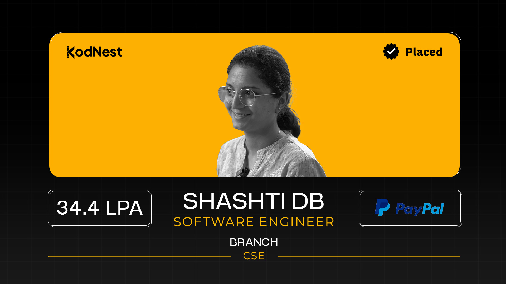
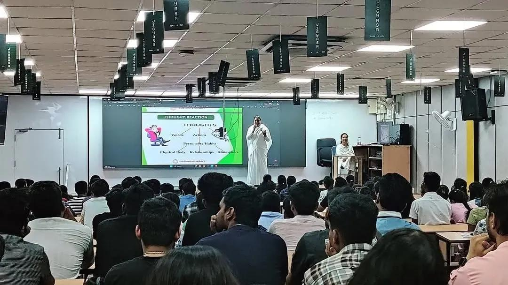
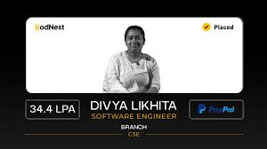
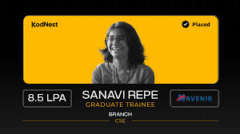
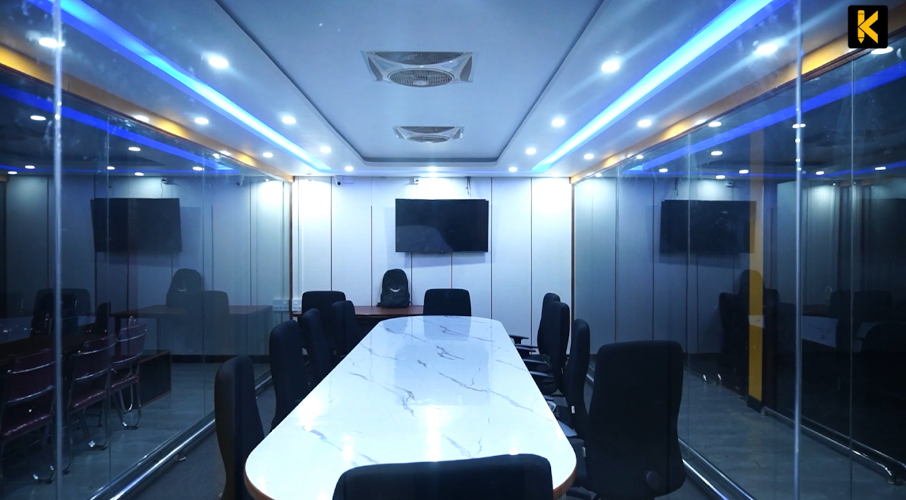
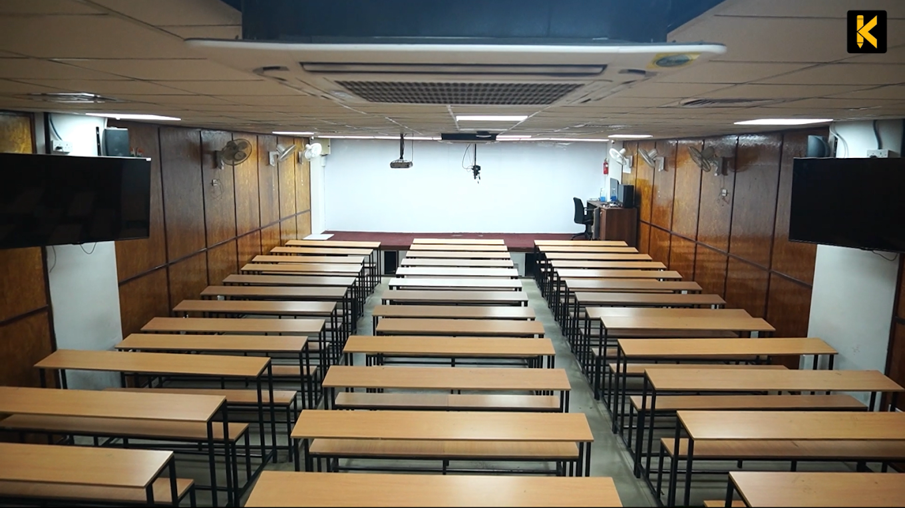

Structured Coding & Placement Preparation
KodNest’s placement structure combines aptitude, technical interviews, communication training and coding assessments for fresher hiring preparation.
CAREERS • CODING • CULTURE
SPECIAL REPORT • BENGALURU TECH ECOSYSTEM
Founded in 2019 in Bengaluru, KodNest has emerged as one of the fastest growing offline technical finishing schools focused on Full Stack Development and Software Testing.
Through structured classroom learning, coding rounds, mentor-led revision systems and placement preparation, the institute focuses on converting engineering graduates into industry-ready software professionals.
Unlike isolated online learning models, KodNest’s Bengaluru campus emphasizes collaboration, technical discussion, peer learning and real-time coding interaction.

| Track | Primary Focus | Duration | Core Technologies | Career Outcome |
|---|---|---|---|---|
| Java Full Stack | Enterprise Development | 100 Days | Java, SQL, React, APIs | Software Engineer |
| Python Full Stack | Backend & Web Systems | 90 Days | Python, Flask, SQL | Backend Developer |
| Testing Premium | QA Automation | 80 Days | Selenium, Manual Testing | QA Engineer |
| DSA Intensive | Interview Preparation | 45 Days | Problem Solving & Algorithms | Coding Interviews |

KodNest’s placement structure combines aptitude, technical interviews, communication training and coding assessments for fresher hiring preparation.

Learners undergo practical project-based technical training before participating in recruitment opportunities connected through hiring partners.

Mentors focus heavily on interview preparation, debugging techniques, revision cycles and real-time coding practice throughout the training process.


The collaborative office environment is designed to replicate modern software workplace culture, encouraging technical interaction and discussion.

Trainers focus on coding implementation, interview preparation, debugging logic, project explanation and software workflows.

Offline classrooms are organized for coding rounds, aptitude preparation, technical assessments and placement-focused learning systems.
HIGHEST PACKAGE
PLACEMENT RATE
STUDENTS TRAINED
HIRING PARTNERS
— Software Engineer Candidate
— Full Stack Student
— Testing Premium Learner